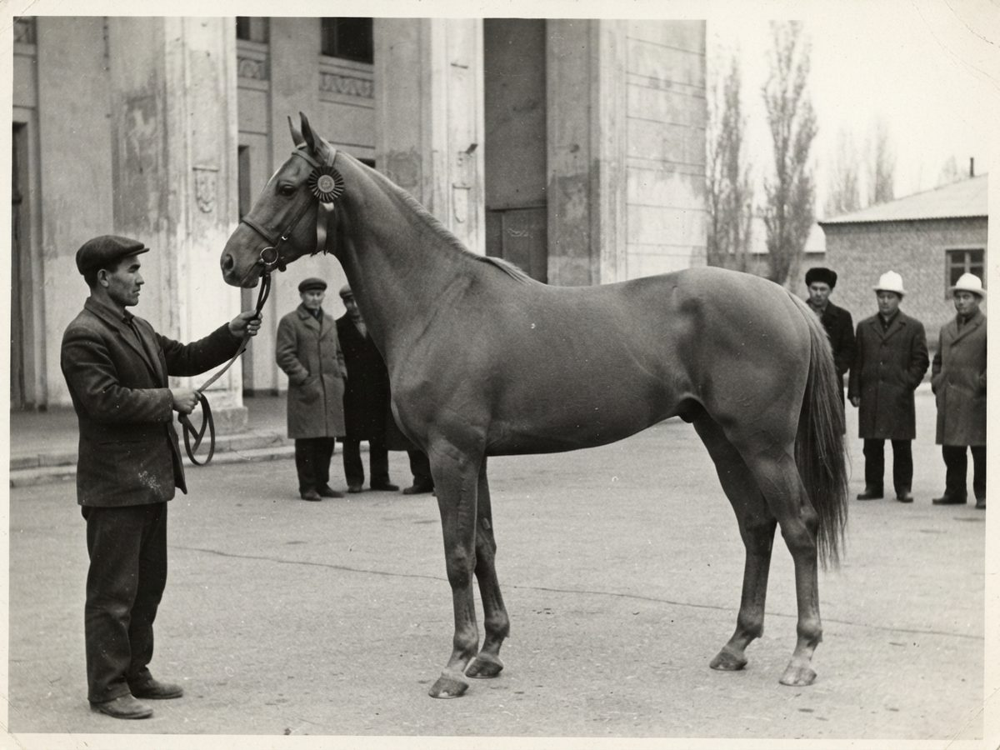
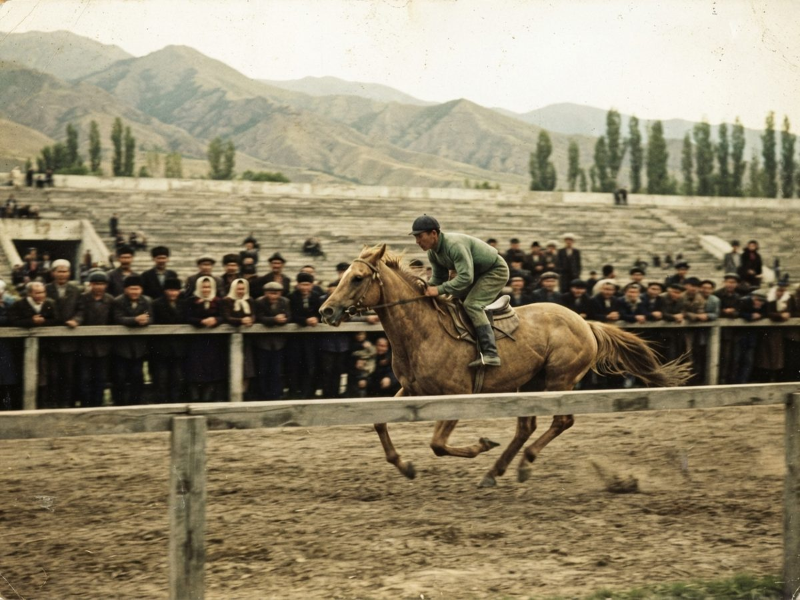
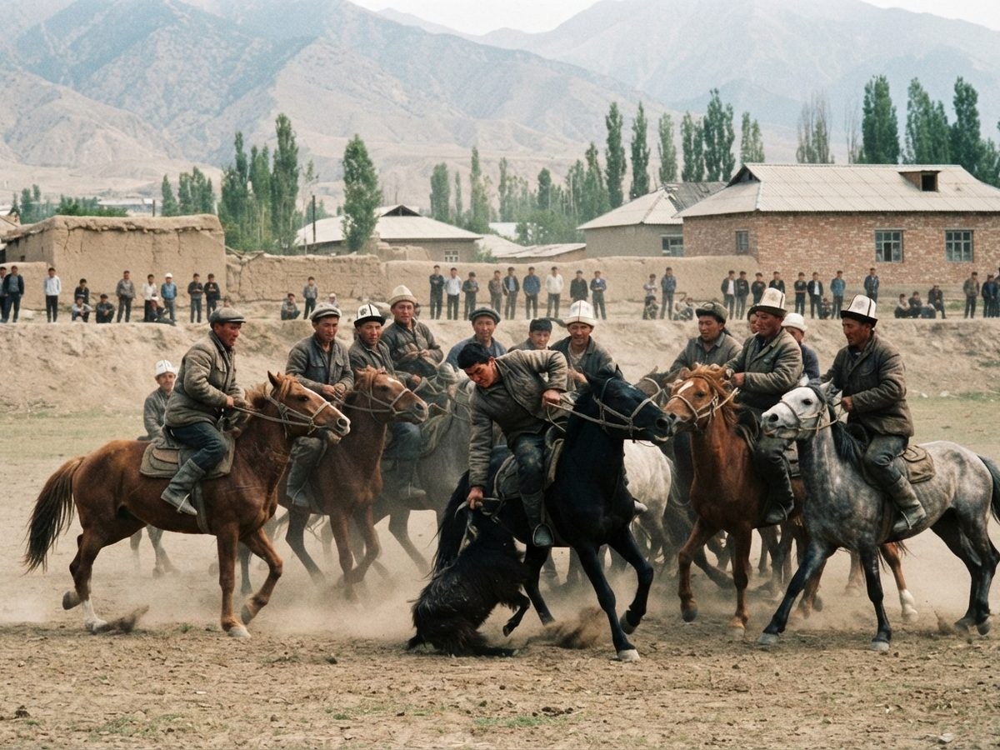
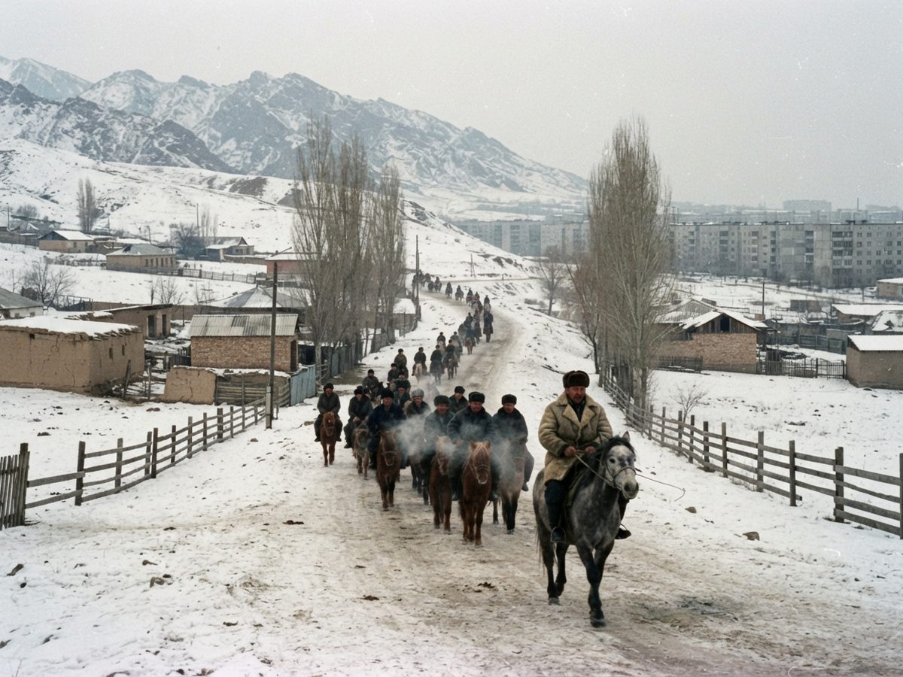
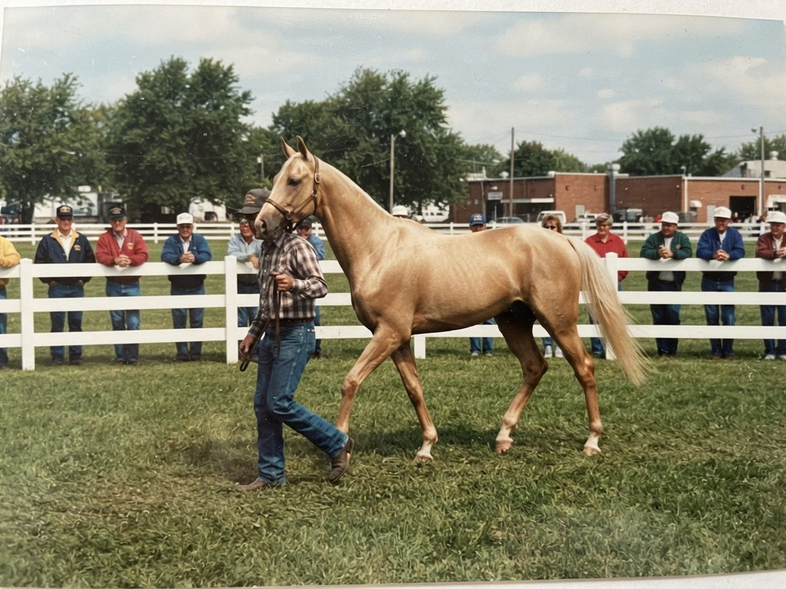
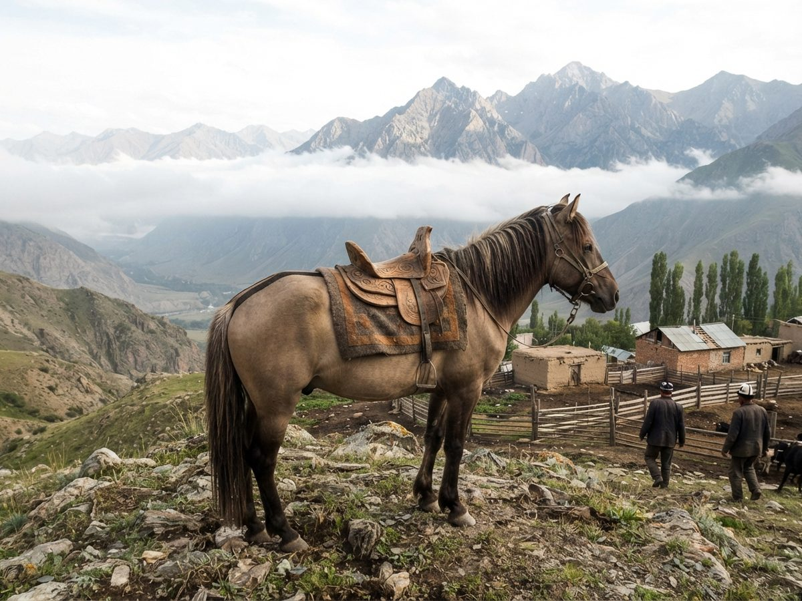
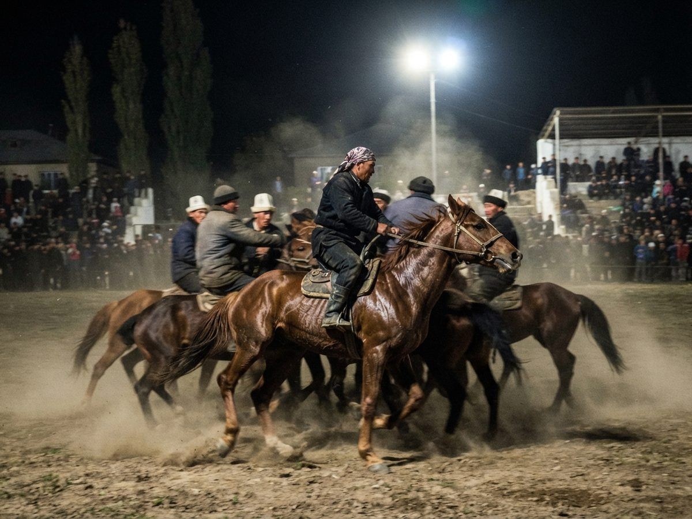
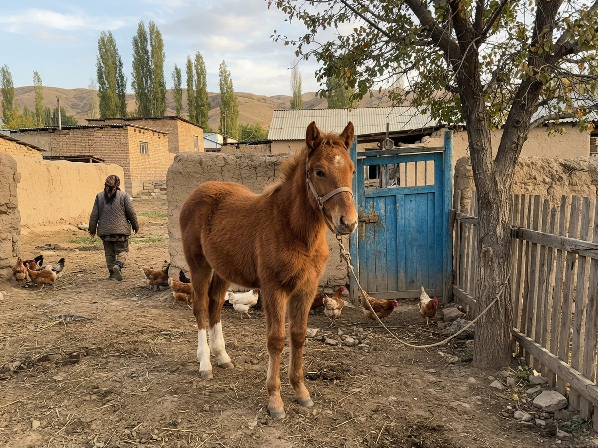

Famous horses
Horses every Iradi knows. Where a story is tradition and not record, we say so: marked legend. Horses with a record have a page.










Before the studbooks
- Kan-Ter ("blood-sweat") legend: the Fergana stallion of King Mugua of Dayuan, hidden in the walnut hills from the Han army in the War of the Heavenly Horses. Akyel breeders say the doran coat comes from him. The Han sources name no horses.
- Ak-Sur ("white mouse-dun") legend: the mare who led the Christians of Taraz into the foothills after the battle of 751 and lay down at a spring. Several valleys claim the Ak-Sur spring and race a grey mare at its feast.
- Kara-Kashka legend: Janyl's dark horse in Janyl Baatyr, and the dark horse in Ayyubov's The White Rider Shows the Way (1913).
- Ak-Tuyak ("white hoof"): grey stallion given by Khan Abd al-Rahim Biy to Gewargis Dosaly uulu after the Dzungar campaign of the 1720s, in a Kokand charter (State Archives Fond 3). The icons give St. Gewargis's horse one white hoof.
- Akbozat ("white-grey horse"): the mare Saparbekov painted in 1908 instead of her owner, the wife of the Governor of Semirechye.
- Jol-Bashchy ("leader of the road") legend: the bay mare who found the track over a Tian Shan pass in the snow of 1916.
The foundation horses
- Jaynak (1921): Akyel studbook No. 1.
- Kökjal (c. 1919): Chongtor studbook No. 1.
- Kara-Jal: the Chong-Talas black taken in the 1925 raid, the story behind The Rider from Kenkol.
- Uchkun (1959): VDNKh gold 1967, sire of the 1970s Akyel stallions.
Sport and screen
- Jel-Kayyk (1968): three Tashkent long-distance wins, the first Iradi horse on Central Television.
- Kara-Kuyun (1973): the ulak gelding of the 1980s.
- Tuman (1970): the grey of Rise of Glory and The Golden Bay.
- Temir-Tuyak: "the only honest one in the Hippodrome", by his rider's account.
- Chagylgan (2006): IradOne's Field and Herd horse.
Horses of the years of trouble
- Sary-Ala legend: "the mare who came home" in 1946.
- The widow's horse (1956): the report calls it a bay cart-horse and gives no name.
- Boz-Bee (1979): the grey mare at the head of the March of the Thousand Saddles, 1992.
- Suuchu (1983): the water-cart mare of the Siege of Talas.
- Almanbet (1999): the dun stallion, and the leading Chongtor endurance line.
- Eesiz: the riderless grey of the Semiz procession.
Abroad and today
- Sary-Ay (1990): the first Akyel in the United States, foundation mare of the American register.
- Ishenim (2002): the white gelding of the Easter 2006 opening.
- Zharkyn (2010): the Governor's golden Akyel, and the parade horse of Irad Day. See also his page at iradgov.org.
- Kün-Bala (2020): the colt whose retest started the 2022 corrections.
- Boorsok (2024): the Year of the Horse filly.
Sources: the State Archives (Fonds 3, 21, 218, 402), the Irad Wiki's list of notable horses, the registries' annual lists, and the owners. To see these horses ridden, the Equestrian Circus shows at the Hippodrome in summer.